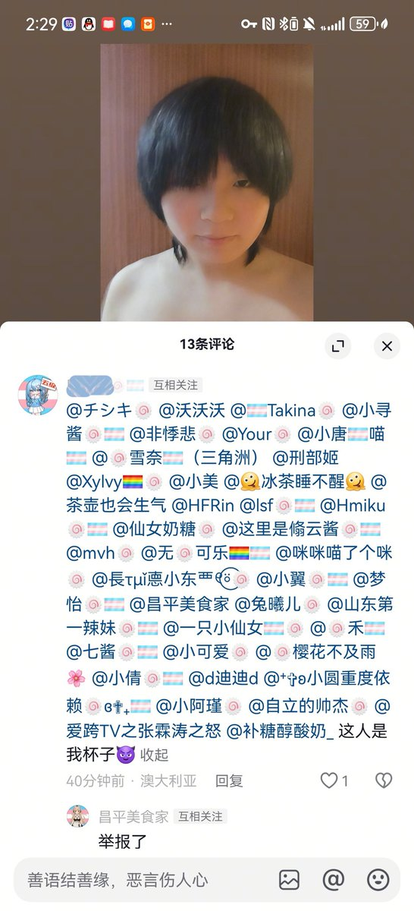

👾Iris-de-lux
@theforeveriris
@ProbiusOfficial Debian么有点意思
______
给你看看魔丸

37（😇）
@hhngki7292924
2.0 https://t.co/IWY5k5sJFx https://t.co/VYtrb1b2TN
探姬 | Hello-CTF 🚩
@ProbiusOfficial
？这个Debian🍥硬控我三秒 还以为刷错地方了（） https://t.co/oasSxttaFY